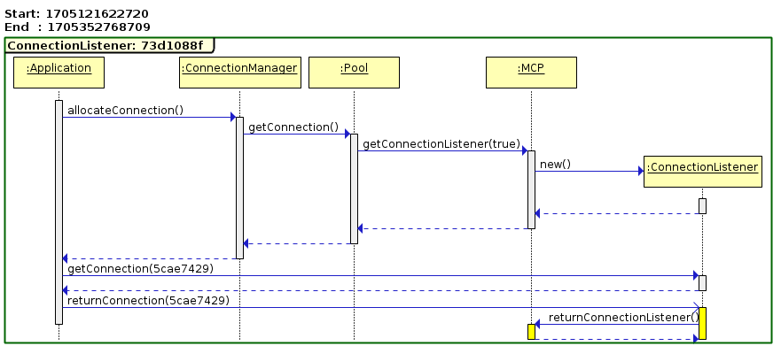

/subsystem=logging/logger=org.jboss.jca.core.tracer:add(level=TRACE)
/subsystem=jca/tracer=tracer:add(enabled=true)EAP7-500
Ondra Chaloupka / ochaloup@redhat.com
JCA Tracer
Tool which produces machine-readable codes at a special TRACE log category at key points
making it easy to apply tooling of the data collected
How to setup EAP
How to setup EAP (XML)
Logger added
<logger category="org.jboss.jca.core.tracer">
<level name="TRACE"/>
</logger>Jca subsystem adding new element
<tracer enabled="true"/>Logger: new file handler
<file-handler name="jca-log-handler">
<file relative-to="jboss.server.log.dir" path="jca-server.log"/>
<append value="false"/>
</file-handler>
<logger category="org.jboss.jca.core.tracer">
<level name="TRACE"/>
<handlers>
<handler name="jca-log-handler"/>
</handlers>
</logger>What you get
server.log is filled with messages in format
IJTRACER-CrashRecoveryDS-536542ce-283-80-1278790274766-NONE--
To generate report
java -cp target/ironjacamar-as.jar:target/ironjacamar-core-impl.jar:target/ironjacamar-core-api.jar\
org.jboss.jca.as.tracer.HTMLReport path/to/server.logresults under directory ${PWD}/report
Sequence diagram

To get images
sdedit -t png -o _path_/report/CrashRecoveryDS/651b9808/1279533649835-1279801901201/651b9808.png\
_path_/report/CrashRecoveryDS/651b9808/1279533649835-1279801901201/651b9808.sdxNarayana Transaction Analyser (NTA)
git clone git@github.com:jbosstm/transaction-analyser.git
mvn clean install
cp nta-dist/target/nta-*.ear $JBOSS_HOME/standalone/deployments
cd $JBOSS_HOME
./bin/standalone.sh -c standalone-full.xmldirect to: http://localhost:8080/nta/
NTA web app
To enable analyze
set Narayana transaction loggging to level
TRACEsetting could be done by clicking on button
Enablein NTA
<logger category="com.arjuna">
<level name="TRACE"/>
</logger>?!